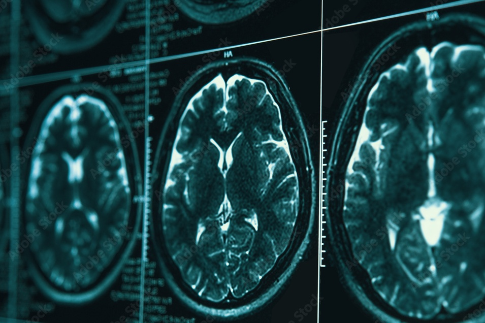
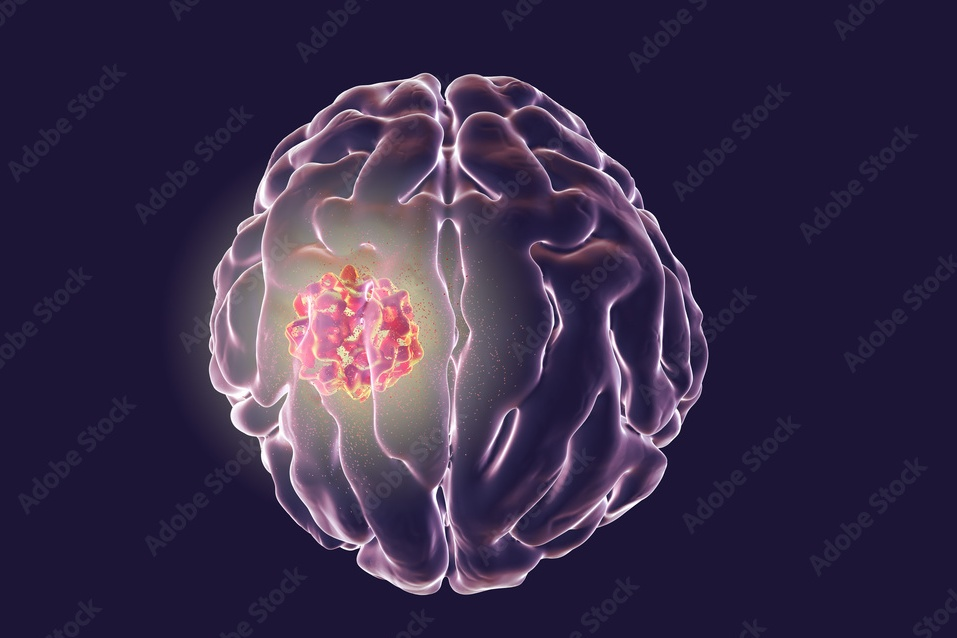

Diagnosis
Parkinson’s disease
Parkinson’s disease is a brain disorder that causes unintended or uncontrollable movements, such as shaking, stiffness, and difficulty with balance and coordination. Symptoms usually begin gradually and worsen over time. As the disease progresses, people may have difficulty walking and talking. They may also have mental and behavioural changes, sleep problems, depression, memory difficulties, and fatigue.

Alzheimer's disease
Alzheimer's disease is a brain disorder that gets worse over time. It's characterized by changes in the brain that lead to deposits of certain proteins. Alzheimer's disease causes the brain to shrink and brain cells to eventually die. Alzheimer's disease is the most common cause of dementia — a gradual decline in memory, thinking, behaviour and social skills. These changes affect a person's ability to function.

Epilepsy disease
Epilepsy is a central nervous system (neurological) disorder in which brain activity becomes abnormal, causing seizures or periods of unusual behavior, sensations and sometimes loss of awareness. Seizure symptoms can vary widely. Some people with epilepsy simply stare blankly for a few seconds during a seizure, while others repeatedly twitch their arms or legs. Having a single seizure doesn't mean you have epilepsy.
